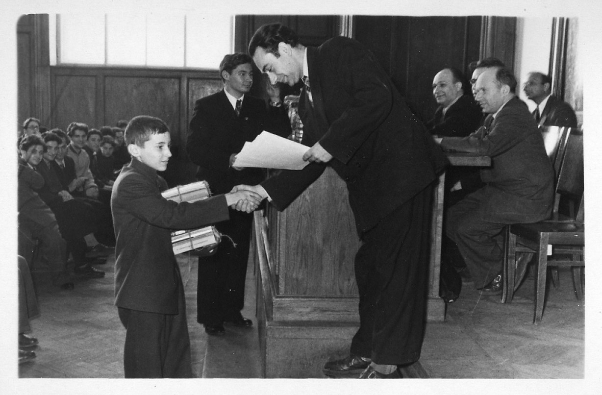

Олимпиадное движение в России
История, проблемы и перспективы
Российское олимпиадное движение прошло путь от локальных университетских и кружковых соревнований до масштабной системы, которая влияет на образовательные траектории школьников и правила поступления в вузы. Вместе с расширением олимпиадной инфраструктуры стали заметнее вопросы доступности, регионального и социального неравенства, а рост роли олимпиад в приеме в университеты ставит вопрос о дальнейшем развитии и регулировании этой системы. Поэтому рассмотреть олимпиадное движение важно последовательно — через его историю, ключевые проблемы и возможные перспективы.
1. История
От кружков математиков до национальной системы
Сегодня школьные олимпиады кажутся естественной частью российского образования. Всероссийская олимпиада проводится по десяткам предметов, крупнейшие университеты организуют собственные соревнования, диплом может дать право поступить в вуз без вступительных испытаний, а заниматься олимпиадной математикой или русским языком дети иногда начинают еще в начальной школе.
Но эта система возникла не сразу. За неполные сто лет олимпиада успела побывать университетским экспериментом, способом поиска будущих ученых, частью государственной системы работы с одаренными детьми, альтернативным каналом поступления в университет и массовой формой дополнительного образования [1].
Поэтому история российского олимпиадного движения — это не только история самих соревнований. Она показывает, как менялись отношения между школой и университетом, представления об одаренности и способы поиска талантливых детей.
Олимпиада до олимпиадной системы

Первые устойчивые школьные математические олимпиады в СССР появились в 1930-е годы. В 1934 году соревнование прошло в Ленинграде, а год спустя — в Москве. Первая Московская математическая олимпиада состоялась весной 1935 года и была организована при активном участии математического сообщества Московского университета. О первых двух московских олимпиадах подробно писал Ростислав Бончковский — секретарь комитета по их проведению [2].
Изначально речь не шла о создании огромной государственной системы. Олимпиада возникла внутри университетской и кружковой математической культуры. Ученые и студенты могли с ее помощью увидеть школьников, которым обычной программы было недостаточно, а сами участники — познакомиться с математикой, заметно отличавшейся от школьных упражнений.
Это различие сохранилось и позднее. Олимпиадная задача должна была проверять не столько знание большого числа формул, сколько способность самостоятельно найти неожиданную идею. Уже первые олимпиады поэтому выполняли сразу несколько функций: позволяли выделять сильных учеников, связывали их с университетским сообществом и показывали им другой тип интеллектуальной деятельности. Историю первых десятилетий Московской математической олимпиады позднее собрали в специальных сборниках ее организаторы [3].
Постепенно олимпиадная форма распространялась на другие дисциплины. До войны появились соревнования по химии, развивались физические олимпиады. В 1950 году биолого-почвенный факультет МГУ начал проводить Московскую биологическую олимпиаду [1].
При этом граница между «университетской» и «школьной» олимпиадой оставалась довольно условной. Соревнование могло иметь городской статус, но задачи составляли университетские преподаватели, они же входили в жюри и приглашали школьников в кружки и на лекции.
Были и гуманитарные эксперименты. Например, летопись МГУ фиксирует проведение на филологическом факультете первой олимпиады по русскому языку и литературе для школьников 9–10 классов уже в 1951 году [4]. Однако подобные соревнования оставались локальными и не образовывали общесоюзной гуманитарной вертикали.
1960-е: от инициативы ученых к государственной системе
В начале 1960-х масштаб движения резко меняется. Юрий Брук, вспоминая историю этого периода в журнале «Квант», писал о появлении так называемых «больших» олимпиад: преподаватели, аспиранты и студенты ведущих вузов ездили по разным городам страны и проводили там соревнования по математике и физике. Среди первых организаторов были Московский университет, МФТИ и Сибирское отделение Академии наук [5].
В 1961 году прошла первая Всероссийская математическая олимпиада. Вслед за математиками начали объединять свои соревнования физики и химики. В 1964 году был создан Центральный оргкомитет Всероссийской физико-математической олимпиады, который возглавил академик Петр Капица. В 1967 году оформилась система Всесоюзных олимпиад по математике, физике и химии [1][5].
Олимпиада при этом существовала не изолированно. Вокруг нее формировалась целая инфраструктура работы с сильными школьниками: кружки, заочные школы, летние школы, специализированные классы, научно-популярные журналы. В 1963 году при Московском государственном университете была создана физико-математическая школа-интернат № 18, позднее ставшая СУНЦ МГУ. Подобные школы появились также при других крупных университетских центрах [6].
Получалась полноценная образовательная траектория. Школьник мог проявить себя на олимпиаде, попасть в поле зрения преподавателей, приехать в летнюю школу, поступить в специализированную школу или заниматься заочно, а спустя несколько лет — стать студентом ведущего университета.
В этой системе олимпиада уже выполняла не только просветительскую, но и кадровую функцию. Государство и научное сообщество получали механизм поиска способных детей далеко за пределами Москвы и Ленинграда.
Не все предметы были равны
Советская олимпиадная система сильно отличалась от современной по набору дисциплин. Ее ядро составляли математика, физика и химия. Биология институционализировалась значительно позднее, а информатика вошла в олимпиадную систему буквально в последние годы существования СССР. Первая Всесоюзная олимпиада по информатике прошла в Свердловске в 1988 году [1].
Государственной всесоюзной вертикали по истории, литературе, обществознанию, экономике или праву в современном понимании не существовало. Это не значит, что гуманитарных интеллектуальных соревнований не было вообще: университеты могли проводить собственные олимпиады и конкурсы. Однако единая общесоюзная система концентрировалась прежде всего вокруг математики и естественных наук.
Исключительно интересным исключением стала лингвистика. В 1965 году на Отделении структурной и прикладной лингвистики филологического факультета МГУ прошла первая Олимпиада по языковедению и математике. Ее создание связывают прежде всего с Андреем Зализняком, Владимиром Успенским и Альфредом Журинским [7].
Уникальность этой олимпиады состояла в том, что соответствующего школьного предмета вообще не существовало. Участнику могли дать материал незнакомого языка, и требовалось самостоятельно восстановить закономерности. Университет тем самым использовал олимпиаду не просто для проверки уже выученного, а чтобы познакомить школьника с новой научной областью.
Традиция прерывалась в 1980-е, но была восстановлена в 1988 году. Позднее российский опыт стал одним из источников международного лингвистического олимпиадного движения [8].
Две советские модели: государственная и университетская
К 1970–1980-м годам фактически сосуществовали две модели. Первая — государственная вертикаль олимпиад, по которой участник двигался от локальных этапов к республиканским и всесоюзным соревнованиям.
Вторая — собственные системы университетов по поиску будущих студентов. Особенно ярко это было заметно в физико-математическом образовании. МФТИ, МГУ и другие научные центры организовывали выездные и заочные олимпиады, привлекая к работе студентов и преподавателей. По воспоминаниям Юрия Брука, именно такие «большие» олимпиады начала 1960-х сыграли важную роль в появлении всероссийской системы [5].
В этом уже легко увидеть предшественника современных университетских олимпиад: вуз не просто ждет выпускника на вступительных экзаменах, а пытается найти талантливого школьника заранее, в том числе далеко от собственного города.
Однако современной единой системы взаимного признания таких соревнований еще не существовало. Не было общего Перечня, уровней олимпиад и одинаково регулируемых льгот. Университетские проекты оставались частью собственных образовательных и профориентационных систем вузов.
После СССР: олимпиада становится универсальной формой
После распада Советского Союза общесоюзная система исчезла, но само движение сохранилось. Российская Всероссийская олимпиада школьников унаследовала многие ее организационные принципы и предметные сообщества.
Одновременно в 1990-е и начале 2000-х происходит одно из самых заметных изменений за всю историю олимпиад: система быстро распространяется на гуманитарные, социальные и прикладные дисциплины.
Всероссийская олимпиада по литературе проводится с 1995 года, по русскому языку и экономике — с 1996 года, первая Всероссийская олимпиада по английскому языку прошла в 1998 год .[9][10][11][12]. На рубеже 1990-х и 2000-х к системе добавляются история, обществознание, технология, физическая культура и другие направления [1].
Это расширение меняло не только список дисциплин, но и само понятие олимпиады. Для математики естественным форматом является набор задач. Но что должно проверяться на олимпиаде по литературе или иностранному языку?
Разные предметные сообщества создавали собственные модели. В литературе важное место занимает анализ художественного текста, в языковых олимпиадах — работа с устройством языка, в иностранном языке появляются аудирование и устная речь, в технологии — практические и проектные задания.
Таким образом, за несколько десятилетий олимпиада превратилась из специфического формата математического и естественно-научного соревнования в универсальный образовательный институт, который разные дисциплины стали перестраивать под собственное понимание способностей.
Университетские олимпиады возвращаются в новой роли
Одновременно с расширением Всероссийской олимпиады в 1990-е и 2000-е активно растет мир собственных университетских соревнований. Здесь новая система во многом продолжала советскую традицию, но теперь университеты действовали в другом образовательном контексте.
Например, Высшая школа экономики впервые провела собственную олимпиаду школьников в 1998 году. Именно от этой даты университет отсчитывает историю современной «Высшей пробы». Сначала отдельные профили были сравнительно небольшими, затем соревнование распространилось на множество регионов и предметов [13].
Московский государственный университет развивал собственные олимпиадные направления. На историческом факультете первая олимпиада школьников «Ломоносов» по истории прошла в 2005 году; организаторы отдельно подчеркивали не только отбор сильных абитуриентов, но и популяризацию исторической науки [14].
Постепенно олимпиада становилась для университета не только формой просветительской работы, но и инструментом поиска и привлечения будущих студентов. Результат соревнования все теснее связывался с поступлением.
2000-е: государство упорядочивает мир вузовских олимпиад
К середине 2000-х собственных соревнований университетов было уже достаточно много. Они отличались форматами, масштабом и правилами признания результатов. Государство начинает создавать единый механизм их регулирования.
В 2007 году был утвержден новый Порядок проведения олимпиад школьников, а в 2008 году — официальный Перечень олимпиад на 2008/09 учебный год. В нем уже присутствовали многочисленные университетские соревнования, каждому из которых устанавливался уровень и указывались соответствующие предметы и направления подготовки [15].
Это важная точка: государство не создало университетские олимпиады с нуля. Оно институционализировало уже существовавший мир вузовских конкурсов, превратив диплом олимпиады в стандартизированный ресурс, который мог непосредственно влиять на поступление.
В результате окончательно оформились две крупные ветви современной системы. Всероссийская олимпиада школьников строится как государственная многоступенчатая вертикаль. Перечневые олимпиады организуются университетами и другими организациями, но признаются в рамках общего государственного механизма.
Олимпиада становится моложе
Еще одно изменение происходило не по предметам, а по возрасту. Классическая олимпиада была прежде всего соревнованием старших школьников. Если ее задачей было найти будущего математика, физика или студента университета, такой возрастной фокус выглядел естественным.
Но к концу XX века олимпиадная культура начинает двигаться в младшие классы. В 1990 году в Москве появляется «Математический праздник» для учеников 6–7 классов. Один из его создателей Иван Ященко позднее объяснял, что организаторы хотели сделать не просто соревнование, а событие, способное заинтересовать ребенка математикой: с задачами, лекциями, играми и быстрым разбором результатов [16].
В 1993 году начинается Турнир Архимеда для 5–6 классов [17]. Развиваются и другие массовые конкурсы. Олимпиада все чаще становится не только механизмом отбора уже сформировавшихся сильных учеников, но и способом раннего вовлечения ребенка в предмет.
В 2000-е собственные олимпиады для младших школьников начинают проводить школы, районы и города. В разных регионах появляются соревнования по математике, русскому языку, окружающему миру и другим предметам, иногда с собственной схемой «школьный этап — городской или районный этап».
Федеральная система пришла к младшим классам позже. Изменения, внесенные приказом Минобрнауки в декабре 2015 года, установили участие учеников 4–11 классов в школьном этапе ВсОШ [18]. В современной практике четвероклассники участвуют прежде всего в школьном этапе по математике и русскому языку, тогда как муниципальный этап начинается позднее.
Получается, что включение младших школьников в официальную систему было не началом ранних олимпиад, а скорее федеральной институционализацией практики, которая уже давно существовала в кружках, университетах, школах и муниципальных образовательных системах.
Международное измерение
Советское олимпиадное движение довольно рано вышло за национальные границы. Первая Международная математическая олимпиада прошла в Румынии в 1959 году, и СССР участвовал в ней с первого года. В следующие десятилетия советские школьники регулярно становились одними из наиболее успешных участников соревнования [19].
Возникновение международных олимпиад вообще хорошо показывает географию раннего движения: многие первые соревнования создавались в странах Центральной и Восточной Европы, где уже существовала развитая культура предметных олимпиад.
Постепенно международными становятся физика, химия, информатика, биология и другие дисциплины. Иногда международная система начинала влиять и обратно на устройство национальных соревнований: требования к подготовке сборной заставляли менять отбор и форматы национальных олимпиад.
Особенно интересна лингвистика. Традиция, начавшаяся в МГУ в 1965 году, постепенно распространилась за пределы СССР и России. Первая Международная олимпиада по лингвистике состоялась в Болгарии в 2003 году, а уже в следующем году ее принимала Москва [20].
От отбора будущих ученых — к целой образовательной экосистеме
Если посмотреть на эту историю целиком, видно несколько последовательных превращений.
В 1930-е олимпиада была прежде всего способом, с помощью которого университетское научное сообщество находило школьников, заинтересованных в математике и других науках.
В 1960–1980-е государство превратило эту инициативу в большую систему поиска и подготовки научно-технических талантов. Олимпиада оказалась связана со специализированными школами, кружками, летними школами, заочным обучением и университетами.
После распада СССР система сохранилась, но стала значительно шире: олимпиады появились в гуманитарных, социальных и прикладных дисциплинах. Одновременно университеты стали активнее использовать собственные соревнования как инструмент привлечения будущих студентов.
В конце 2000-х государство упорядочило эту систему, связав результаты университетских олимпиад с формализованными правилами поступления. Параллельно олимпиадная культура двигалась вниз по возрасту — от старшеклассников к средней и затем начальной школе.
В результате современное олимпиадное движение соединяет институты, которые исторически возникали в разное время и для разных целей: государственную ВсОШ, университетские перечневые олимпиады, городские и региональные соревнования, кружковое движение и систему международных олимпиад.
Вместе с этим менялся и ответ на вопрос, зачем вообще нужна олимпиада. Для организаторов первых математических олимпиад это был способ найти необычно способного школьника и познакомить его с настоящей математикой. Для советской государственной системы — еще и механизм выращивания будущих ученых и инженеров. Для университета XXI века — возможность найти сильного абитуриента. Для младшего школьника олимпиада может быть первым знакомством с предметом за пределами учебника.
Из сочетания этих функций и выросла система, которую сегодня принято называть российским олимпиадным движением.
2. Проблемы
Исследователи НИУ ВШЭ Светлана Черненко и Ксения Романенко в работе «„Обречены на успех“: продвигающая сила школы, роль семьи и неравенство на пути олимпиадников в университет», изучили факторы, влияющие на формирование олимпиадной траектории школьников. Для этого авторы не ограничились статистическими данными, а обратились непосредственно к опыту тех, кто уже прошел этот путь: 61 студента — победителей и призеров регионального и заключительного этапов ВсОШ. В выборку вошли 28 девушек и 33 юноши из 48 населенных пунктов, 38 регионов и всех восьми федеральных округов России, представлявшие разные олимпиадные предметы. Интервью проводили по телефону в августе 2020 года и спрашивали обо всем пути — от момента, когда школьник впервые услышал об олимпиадах, до подготовки, поддержки школы, семьи и поступления в университет [21].
Есть важная деталь: выпускников московских школ авторы намеренно не включили. В Москве система олимпиадной подготовки настолько развита, что, по мнению исследователей, московский опыт мог бы исказить картину для остальных регионов. Уже это хорошо показывает первую проблему: олимпиадный путь в разных частях страны начинается в очень разных условиях.
1. У олимпиады есть «цена входа»
Формально участие во ВсОШ бесплатно. Но подготовка — далеко не всегда. В интервью появлялись частные школы, платные курсы, выездные школы и лагеря; иногда на семью ложились и расходы на поездки. Для одних участников такие траты «не были барьером», для других семья не могла позволить себе даже платное обучение в вузе: из 61 опрошенного лишь трое сказали, что смогли бы учиться там же на коммерческой основе, если бы не олимпиадная льгота [21].
Получается парадокс: олимпиада действительно может стать социальным лифтом, позволяя бесплатно попасть в сильный университет, но шанс подготовиться к ней тоже частично зависит от ресурсов семьи.
2. География возможностей
Исследования, на которые опираются Черненко и Романенко, фиксируют территориальное неравенство: школьники из Москвы имеют доступ к более развитой системе подготовки и чаще занимаются с преподавателями, знакомыми с олимпиадной системой [21].
За пределами столицы ситуация может выглядеть совсем иначе. Например, участник исследования из Сыктывкара рассказывал, что хотел писать школьный этап по праву и экономике, но для этого ему приходилось отдельно добиваться от школы, чтобы соревнование вообще состоялось.
3. Сначала нужно вообще узнать, что олимпиада существует
ЕГЭ известен практически каждому старшекласснику. С олимпиадами все иначе. Один из участников из Краснодара признался исследователям, что до собственной победы во ВсОШ по литературе практически не понимал, какие возможности она дает при поступлении. Другие узнавали о соревнованиях от друзей, знакомых или на сайтах приемных комиссий университетов. Поэтому авторы называют доступ к информации первым барьером на пути в олимпиадное движение [21].
4. Иногда все начинается с одного учителя
В историях как минимум 44 из 61 участников присутствовал своеобразный «гейткипер» — чаще всего учитель-предметник, который замечал интерес ребенка и предлагал попробовать олимпиаду. У девушки из Курска путь начался практически с одной фразы преподавателя: «А сходи-ка туда». Школа как организация, по ее словам, к этому отношения почти не имела [21].
Это делает систему уязвимой: два одинаково способных школьника могут оказаться на совершенно разных траекториях просто потому, что одному встретился такой педагог, а другому — нет.
5. Школа может быть ускорителем — а может оставаться в стороне
Разрыв особенно заметен в том, как школы поддерживают тех, кто уже начал участвовать. В одних местах олимпиаднику составляли индивидуальное расписание и освобождали от части уроков ради специальной подготовки с приглашенными преподавателями. Где-то школа оплачивала поездки на этапы ВсОШ, где-то победители получали стипендии. А в Старом Осколе директор после успешного выступления приглашала учеников к себе и символически угощала конфетой [21].
В других школах такой культуры просто нет. Один из участников объяснял свое увлечение тем, что вырос в коллективе, где «олимпиады были нормой».
6. Единой системы поддержки фактически нет
Из интервью складывается очень неоднородная картина: где-то действуют сборы, летние школы, вузовские преподаватели, выплаты и свободное расписание, а где-то даже проведение школьного этапа зависит от настойчивости одного ученика. То есть формально ВсОШ — единая федеральная система, но реальная инфраструктура вокруг нее во многом складывается локально — из возможностей конкретной школы, региона и отдельных педагогов [21].
7. Олимпиада выравнивает неравенство — и одновременно может его воспроизводить
Для некоторых героев исследования олимпиада стала единственным реалистичным способом попасть в желаемый университет. 17 респондентов говорили, что по ЕГЭ в свой вуз, вероятно, не прошли бы: проходные баллы были слишком высокими, а часть школьников сознательно «делали ставку на олимпиаду» [21].
Но здесь возникает противоречие: победа дает доступ к бюджетному месту независимо от дохода семьи, тогда как доступ к информации, сильным преподавателям и дополнительной подготовке распределен далеко не одинаково.
8. Семья — не только кошелек, но и навигатор
Еще один невидимый ресурс — понимание того, как устроена образовательная система. Некоторые участники знали об олимпиадах с младших классов просто потому, что находились среди олимпиадников или росли в семье педагогов. Для них соревнования были естественной частью школьной жизни, а не неизвестной альтернативой ЕГЭ [21].
Эту картину дополняет исследование НИУ ВШЭ 2025 года уже на большой количественной выборке. Авторы опросили 9969 студентов из 522 российских вузов и сравнили образовательные траектории в зависимости от образования родителей. Среди студентов, у которых оба родителя получили высшее образование, 4% поступили по результатам олимпиад, тогда как среди тех, у кого высшего образования нет ни у одного родителя, — 2% (см. Таблицу 1). Кроме того, без курсов и репетиторов к ЕГЭ готовились 24% детей двух родителей с высшим образованием против 39% студентов первого поколения [22].
При этом авторы предостерегают от слишком сильного вывода: статистические различия есть, но размер эффекта небольшой. Поэтому эти цифры скорее показывают след семейного образовательного капитала, чем доказывают жесткую зависимость олимпиадного успеха от происхождения.
| Образование родителей | Нет ВО у обоих | Есть ВО у одного | Есть ВО у обоих |
|---|---|---|---|
| Поступили вне конкурса по результатам олимпиад | 2% | 2% | 4% |
| Не занимались на подготовительных курсах или с репетитором | 39% | 28% | 24% |
Источник: Тарасова Е. А., Вилкова К. А., Жучкова С. В., Терентьев Е. А. «На пути к преодолению неравенства: портрет и опыт студентов первого поколения в России», 2025.
3. Перспективы
Последние годы количество мест, занимаемых олимпиадниками в вузах, растет. В 2026 году доля поступивших по олимпиадам особенно привлекла общественное внимание. Директор Института образования НИУ ВШЭ Евгений Терентьев дал комментарий ситуации. В его оценке можно увидеть несколько тезисов касательно будущего олимпиадного движения. [23]
1) Во-первых, такая ситуация с долей поступающих в вузы БВИ по олимпиадам потребует пересмотра образовательной политики со стороны регулирующих органов. Развивая тезис Терентьева, можно ожидать, что перечень олимпиад, дающих право поступления БВИ, будет пересмотрен как на уровне федерального законодательства, так и на уровне отдельных вузов.
2) Во-вторых, по мнению Е.Терентьева, талантливые олимпиадники будут поступать и в региональные вузы (можно предположить, что такая тенденция связана с возрастающей конкуренцией даже за места БВИ в столичных регионах). Приезд олимпиадников в регионы, по мнению Терентьева, “может стать инструментом внутристрановой миграции и поможет закрепить молодые кадры в городах, страдающих от оттока населения”.
Другие тенденции развития олимпиадного движения, которые мы ожидаем увидеть в будущем, включают в себя:
1) Продолжение политики ужесточения правил “Всероса” как главной олимпиады
В июле 2026 Минпросвещения поменяло правила проведения Всероса (Всероссийской олимпиады школьников). Целью изменений названо повышение честности соревнования. Всерос - главная, самая массовая школьная олимпиада, которая позволяет поступать в любой вуз по БВИ без подтверждения баллами ЕГЭ. Поэтому олимпиада, по которой поступает примерно треть всех “БВИ-шников”, требует ужесточения регулирования, что мы и ожидаем увидеть в следующих волнах изменения правил проведения со стороны Минпросвещения [24].
2) Фокус на олимпиады по направлениям подготовки, приоритетным для государства и рынка труда
Мы ожидаем увидеть увеличение количества перечневых олимпиад по инженерным направлениям подготовки в связи с дефицитом выпускников данного профиля на рынке труда. При этом, для привлечения абитуриентов, инженерные олимпиады могут быть реализованы по наиболее интересным “точечным” профилям подготовки - ИИ, кибербезопасность, аэрокосмические системы и пр.
3) Рост рынка специализированных школ и репетиторов, подготавливающих к олимпиадам
Поскольку участие в олимпиадах становится все более популярной стратегией поступления, вокруг нее будет вырастать все большее количество образовательной инфраструктуры - от общеобразовательных организаций по типу Школы ЦПМ до частных EdTech-проектов с небольшими командами и отдельных репетиторов, помогающим достичь успеха в олимпиаде.
4) Участие университетов в работе со школьниками и раннее привлечение талантов через подготовку к олимпиадам
Конкуренция среди вузов за самых талантливых абитуриентов продолжает расти, и вузы все раньше начинают работать над привлечением школьников. Один из таких механизмов - привлечение школьников через курсы подготовки к олимпиадам, специальные образовательные программы и мероприятия. Например, Центральный университет ежегодно готовит школьников к международным олимпиадам по искусственному интеллекту и кибербезопасности, что позволяет школьникам заранее познакомиться с образовательной средой университета, а вузу - получить лояльных абитуриентов из числа самых амбициозных и талантливых школьников [25].